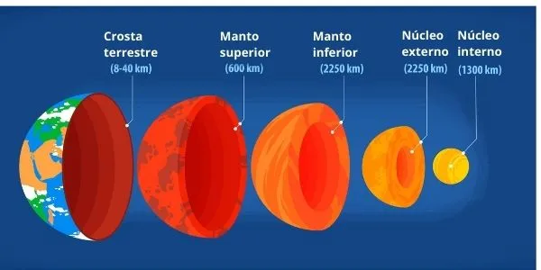

A terra se formou a partir de uma grande explosão
ocorrida no sol há cerca de 4,5 bilhões de anos.
Neste momento, após a explosão, a terra estava
superaquecida. No entanto, nos cosmos,
as temperaturas são negativas, o que provocou
um esfriamento de fora para dentro. Com este
processo, começa a criação das massas rochosas
que dão origem a crosta terrestre.
Camadas da Terra

CROSTA TERRESTRE:
Trata-se da parte mais externa da terra formada
por rochas de granito, basalto e matéria organica.
Tem 5Km a 80Km de espessura, e é onde se encontram
as montanhas, planaltos, planícies entre outros.
MANTO:
O manto é uma camada intermediária de magma pastoso,
situada entre a crosta e o núcleo, com 2900Km de
extensão.